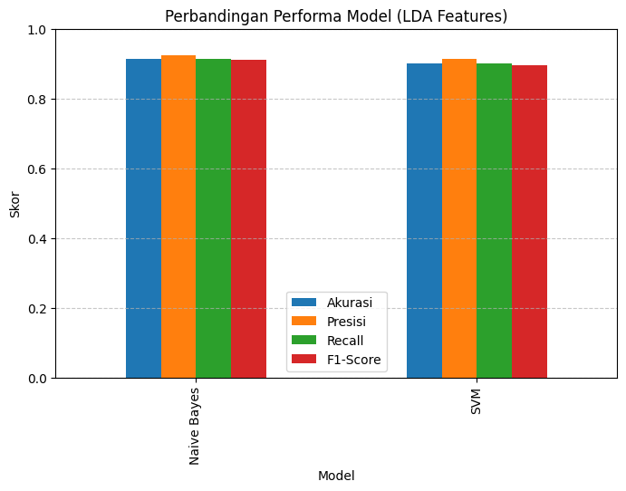

Klasifikasi berita#
import pandas as pd
import numpy as np
import re
import matplotlib.pyplot as plt
import seaborn as sns
from tqdm import tqdm
import nltk
from nltk.corpus import stopwords
from nltk.tokenize import word_tokenize
from Sastrawi.Stemmer.StemmerFactory import StemmerFactory
from sklearn.model_selection import train_test_split
from sklearn.feature_extraction.text import CountVectorizer
from sklearn.decomposition import LatentDirichletAllocation
from sklearn.naive_bayes import MultinomialNB
from sklearn.svm import LinearSVC
from sklearn.metrics import accuracy_score
nltk.download('punkt')
nltk.download('stopwords')
file_path = "Berita.csv"
df = pd.read_csv(file_path)
print("Jumlah data:", len(df))
print(df.head())
# Preprocessing
factory = StemmerFactory()
stemmer = factory.create_stemmer()
stop_words = set(stopwords.words('indonesian'))
def preprocess_text(text):
text = str(text).lower()
text = re.sub(r"http\S+|www\S+|https\S+", '', text)
text = re.sub(r'[^a-zA-Z\s]', '', text)
text = re.sub(r'\s+', ' ', text).strip()
tokens = word_tokenize(text)
tokens = [t for t in tokens if t not in stop_words and len(t) > 2]
stemmed = [stemmer.stem(t) for t in tokens]
return ' '.join(stemmed)
print(" Melakukan preprocessing")
tqdm.pandas()
df['text_clean'] = df['berita'].progress_apply(preprocess_text)
df['kategori'] = df['kategori'].astype(str)
print("\nContoh hasil preprocessing:")
print(df[['judul', 'text_clean', 'kategori']].head())
[nltk_data] Downloading package punkt to C:\Users\Mukti
[nltk_data] Hendra\AppData\Roaming\nltk_data...
[nltk_data] Package punkt is already up-to-date!
[nltk_data] Downloading package stopwords to C:\Users\Mukti
[nltk_data] Hendra\AppData\Roaming\nltk_data...
[nltk_data] Package stopwords is already up-to-date!
Jumlah data: 1500
No judul \
0 1 Airlangga Harap Kenaikan UMP Tingkatkan Daya B...
1 2 PT SIER Beri Penghargaan untuk 50 Tenant Terba...
2 3 Prabowo Bakal Bentuk Kementerian Penerimaan Ne...
3 4 Sinergi Kemenag & BPJS Ketenagakerjaan Lindung...
4 5 Pemerintah Segera Bentuk Satgas PHK Usai Tetap...
berita \
0 Menteri Koordinator (Menko) Bidang Perekonomia...
1 Dalam rangka memeriahkan hari jadi ke-50, PT S...
2 Wacana Presiden Prabowo Subianto akan membentu...
3 BPJS Ketenagakerjaan dan Kementerian Agama (Ke...
4 Pemerintah akan segera membentuk Satuan Tugas ...
tanggal kategori \
0 Minggu, 01 Des 2024 23:40 WIB Ekonomi
1 Minggu, 01 Des 2024 20:45 WIB Ekonomi
2 Minggu, 01 Des 2024 19:40 WIB Ekonomi
3 Minggu, 01 Des 2024 19:03 WIB Ekonomi
4 Minggu, 01 Des 2024 19:00 WIB Ekonomi
link
0 https://www.cnnindonesia.com/ekonomi/202412012...
1 https://www.cnnindonesia.com/ekonomi/202412012...
2 https://www.cnnindonesia.com/ekonomi/202412011...
3 https://www.cnnindonesia.com/ekonomi/202412011...
4 https://www.cnnindonesia.com/ekonomi/202412011...
Melakukan preprocessing
100%|██████████| 1500/1500 [37:03<00:00, 1.48s/it]
Contoh hasil preprocessing:
judul \
0 Airlangga Harap Kenaikan UMP Tingkatkan Daya B...
1 PT SIER Beri Penghargaan untuk 50 Tenant Terba...
2 Prabowo Bakal Bentuk Kementerian Penerimaan Ne...
3 Sinergi Kemenag & BPJS Ketenagakerjaan Lindung...
4 Pemerintah Segera Bentuk Satgas PHK Usai Tetap...
text_clean kategori
0 menteri koordinator menko bidang ekonomi airla... Ekonomi
1 rangka riah surabaya industrial estate rungkut... Ekonomi
2 wacana presiden prabowo subianto bentuk bentuk... Ekonomi
3 bpjs ketenagakerjaan menteri agama kemenag lin... Ekonomi
4 perintah bentuk satu tugas putus hubung kerja ... Ekonomi
---------------------------------------------------------------------------
OSError Traceback (most recent call last)
Cell In[9], line 31
29 print("\nContoh hasil preprocessing:")
30 print(df[['judul', 'text_clean', 'kategori']].head())
---> 31 df.to_csv("/content/Berita_preprocessed.csv", index=False)
32 print("\n✅ File hasil disimpan sebagai: Berita_preprocessed.csv")
File c:\Users\Mukti Hendra\AppData\Local\Programs\Python\Python312\Lib\site-packages\pandas\util\_decorators.py:333, in deprecate_nonkeyword_arguments.<locals>.decorate.<locals>.wrapper(*args, **kwargs)
327 if len(args) > num_allow_args:
328 warnings.warn(
329 msg.format(arguments=_format_argument_list(allow_args)),
330 FutureWarning,
331 stacklevel=find_stack_level(),
332 )
--> 333 return func(*args, **kwargs)
File c:\Users\Mukti Hendra\AppData\Local\Programs\Python\Python312\Lib\site-packages\pandas\core\generic.py:3986, in NDFrame.to_csv(self, path_or_buf, sep, na_rep, float_format, columns, header, index, index_label, mode, encoding, compression, quoting, quotechar, lineterminator, chunksize, date_format, doublequote, escapechar, decimal, errors, storage_options)
3975 df = self if isinstance(self, ABCDataFrame) else self.to_frame()
3977 formatter = DataFrameFormatter(
3978 frame=df,
3979 header=header,
(...) 3983 decimal=decimal,
3984 )
-> 3986 return DataFrameRenderer(formatter).to_csv(
3987 path_or_buf,
3988 lineterminator=lineterminator,
3989 sep=sep,
3990 encoding=encoding,
3991 errors=errors,
3992 compression=compression,
3993 quoting=quoting,
3994 columns=columns,
3995 index_label=index_label,
3996 mode=mode,
3997 chunksize=chunksize,
3998 quotechar=quotechar,
3999 date_format=date_format,
4000 doublequote=doublequote,
4001 escapechar=escapechar,
4002 storage_options=storage_options,
4003 )
File c:\Users\Mukti Hendra\AppData\Local\Programs\Python\Python312\Lib\site-packages\pandas\io\formats\format.py:1014, in DataFrameRenderer.to_csv(self, path_or_buf, encoding, sep, columns, index_label, mode, compression, quoting, quotechar, lineterminator, chunksize, date_format, doublequote, escapechar, errors, storage_options)
993 created_buffer = False
995 csv_formatter = CSVFormatter(
996 path_or_buf=path_or_buf,
997 lineterminator=lineterminator,
(...) 1012 formatter=self.fmt,
1013 )
-> 1014 csv_formatter.save()
1016 if created_buffer:
1017 assert isinstance(path_or_buf, StringIO)
File c:\Users\Mukti Hendra\AppData\Local\Programs\Python\Python312\Lib\site-packages\pandas\io\formats\csvs.py:251, in CSVFormatter.save(self)
247 """
248 Create the writer & save.
249 """
250 # apply compression and byte/text conversion
--> 251 with get_handle(
252 self.filepath_or_buffer,
253 self.mode,
254 encoding=self.encoding,
255 errors=self.errors,
256 compression=self.compression,
257 storage_options=self.storage_options,
258 ) as handles:
259 # Note: self.encoding is irrelevant here
260 self.writer = csvlib.writer(
261 handles.handle,
262 lineterminator=self.lineterminator,
(...) 267 quotechar=self.quotechar,
268 )
270 self._save()
File c:\Users\Mukti Hendra\AppData\Local\Programs\Python\Python312\Lib\site-packages\pandas\io\common.py:749, in get_handle(path_or_buf, mode, encoding, compression, memory_map, is_text, errors, storage_options)
747 # Only for write methods
748 if "r" not in mode and is_path:
--> 749 check_parent_directory(str(handle))
751 if compression:
752 if compression != "zstd":
753 # compression libraries do not like an explicit text-mode
File c:\Users\Mukti Hendra\AppData\Local\Programs\Python\Python312\Lib\site-packages\pandas\io\common.py:616, in check_parent_directory(path)
614 parent = Path(path).parent
615 if not parent.is_dir():
--> 616 raise OSError(rf"Cannot save file into a non-existent directory: '{parent}'")
OSError: Cannot save file into a non-existent directory: '\content'
df.to_csv("Berita_preprocessed.csv", index=False)
print("\n✅ File hasil disimpan sebagai: Berita_preprocessed.csv")
✅ File hasil disimpan sebagai: Berita_preprocessed.csv
# Load data hasil preprocessing
df = pd.read_csv("Berita_preprocessed.csv")
print("Jumlah data:", len(df))
print(df.head())
stop_words = stopwords.words('indonesian')
# Vektorisasi teks untuk LDA
vectorizer = CountVectorizer(max_df=0.95, min_df=2, stop_words=stop_words)
X_counts = vectorizer.fit_transform(df['text_clean'])
# Latent Dirichlet Allocation (LDA)
n_topics = 10
lda = LatentDirichletAllocation(n_components=n_topics, random_state=42)
X_topics = lda.fit_transform(X_counts)
print(f"\n LDA selesai - menghasilkan {n_topics} topik.")
# Split data latih & uji
X_train, X_test, y_train, y_test = train_test_split(
X_topics, df['kategori'], test_size=0.2, random_state=42, stratify=df['kategori']
)
# Model 1: Naive Bayes
nb_model = MultinomialNB()
nb_model.fit(X_train, y_train)
y_pred_nb = nb_model.predict(X_test)
# Model 2: SVM
svm_model = LinearSVC(random_state=42)
svm_model.fit(X_train, y_train)
y_pred_svm = svm_model.predict(X_test)
# Evaluasi performa
def evaluate_model(y_true, y_pred, model_name):
acc = accuracy_score(y_true, y_pred)
prec = precision_score(y_true, y_pred, average='weighted', zero_division=0)
rec = recall_score(y_true, y_pred, average='weighted', zero_division=0)
f1 = f1_score(y_true, y_pred, average='weighted', zero_division=0)
return {'Model': model_name, 'Akurasi': acc, 'Presisi': prec, 'Recall': rec, 'F1-Score': f1}
results = []
results.append(evaluate_model(y_test, y_pred_nb, "Naive Bayes"))
results.append(evaluate_model(y_test, y_pred_svm, "SVM"))
# 10️⃣ Tampilkan hasil evaluasi dalam tabel
eval_df = pd.DataFrame(results)
print("\n Evaluasi Model:")
print(eval_df)
# 11️⃣ Visualisasi perbandingan performa
plt.figure(figsize=(8,5))
eval_df.set_index('Model')[['Akurasi','Presisi','Recall','F1-Score']].plot(kind='bar', figsize=(8,5))
plt.title("Perbandingan Performa Model (LDA Features)")
plt.ylabel("Skor")
plt.ylim(0,1)
plt.grid(axis='y', linestyle='--', alpha=0.7)
plt.show()
# 12️⃣ (Opsional) Tampilkan topik LDA
def display_topics(model, feature_names, no_top_words):
for idx, topic in enumerate(model.components_):
print(f"Topik {idx+1}:")
print(" ".join([feature_names[i] for i in topic.argsort()[:-no_top_words - 1:-1]]))
print("")
print("\n🧩 Daftar topik utama (kata-kata dominan):")
display_topics(lda, vectorizer.get_feature_names_out(), 10)
Jumlah data: 1500
No judul \
0 1 Airlangga Harap Kenaikan UMP Tingkatkan Daya B...
1 2 PT SIER Beri Penghargaan untuk 50 Tenant Terba...
2 3 Prabowo Bakal Bentuk Kementerian Penerimaan Ne...
3 4 Sinergi Kemenag & BPJS Ketenagakerjaan Lindung...
4 5 Pemerintah Segera Bentuk Satgas PHK Usai Tetap...
berita \
0 Menteri Koordinator (Menko) Bidang Perekonomia...
1 Dalam rangka memeriahkan hari jadi ke-50, PT S...
2 Wacana Presiden Prabowo Subianto akan membentu...
3 BPJS Ketenagakerjaan dan Kementerian Agama (Ke...
4 Pemerintah akan segera membentuk Satuan Tugas ...
tanggal kategori \
0 Minggu, 01 Des 2024 23:40 WIB Ekonomi
1 Minggu, 01 Des 2024 20:45 WIB Ekonomi
2 Minggu, 01 Des 2024 19:40 WIB Ekonomi
3 Minggu, 01 Des 2024 19:03 WIB Ekonomi
4 Minggu, 01 Des 2024 19:00 WIB Ekonomi
link \
0 https://www.cnnindonesia.com/ekonomi/202412012...
1 https://www.cnnindonesia.com/ekonomi/202412012...
2 https://www.cnnindonesia.com/ekonomi/202412011...
3 https://www.cnnindonesia.com/ekonomi/202412011...
4 https://www.cnnindonesia.com/ekonomi/202412011...
text_clean
0 menteri koordinator menko bidang ekonomi airla...
1 rangka riah surabaya industrial estate rungkut...
2 wacana presiden prabowo subianto bentuk bentuk...
3 bpjs ketenagakerjaan menteri agama kemenag lin...
4 perintah bentuk satu tugas putus hubung kerja ...
c:\Users\Mukti Hendra\AppData\Local\Programs\Python\Python312\Lib\site-packages\sklearn\feature_extraction\text.py:402: UserWarning: Your stop_words may be inconsistent with your preprocessing. Tokenizing the stop words generated tokens ['baiknya', 'berkali', 'kali', 'kurangnya', 'mata', 'olah', 'sekurang', 'setidak', 'tama', 'tidaknya'] not in stop_words.
warnings.warn(
LDA selesai - menghasilkan 10 topik.
Evaluasi Model:
Model Akurasi Presisi Recall F1-Score
0 Naive Bayes 0.913333 0.923535 0.913333 0.910695
1 SVM 0.900000 0.913634 0.900000 0.895848
<Figure size 800x500 with 0 Axes>

🧩 Daftar topik utama (kata-kata dominan):
Topik 1:
presiden trump yoon negara militer perintah serang suriah anggota rusia
Topik 2:
laut pagar tangerang menteri milik nelayan kkp bangun misterius ikan
Topik 3:
pangan tani beras milik laku kembang produksi hasil lpg jakarta
Topik 4:
bakar los orang pesawat angeles api air lapor korban wilayah
Topik 5:
prabowo kerja menteri perintah presiden indonesia ekonomi program anggar negara
Topik 6:
main indonesia timnas piala latih gol menit menang laga tanding
Topik 7:
makan gizi program mbg gratis suara jakarta jabat terima haji
Topik 8:
israel senjata gencat gaza indonesia hamas palestina sepakat bebas sandera
Topik 9:
duga kpk korban jalan banjir sangka warga polisi periksa orang
Topik 10:
persen harga ppn pajak indonesia minyak tarif menteri perintah uang
import numpy as np
import pandas as pd
# ============================================================
# 🔹 PROPORSI TOPIK DALAM DOKUMEN
# ============================================================
doc_topic_df = pd.DataFrame(X_topics,
columns=[f"Topik_{i+1}" for i in range(n_topics)])
doc_topic_df["Kategori"] = df["kategori"]
print("\n📄 Proporsi Topik dalam Setiap Dokumen (Document-Topic Distribution):")
print(doc_topic_df.head())
# Simpan ke file CSV (opsional)
doc_topic_df.to_csv("Proporsi_Topik_Dalam_Dokumen.csv", index=False)
print("✅ Disimpan ke: Proporsi_Topik_Dalam_Dokumen.csv")
# ============================================================
# 🔹 PROPORSI KATA DALAM TOPIK
# ============================================================
topic_word = lda.components_ / lda.components_.sum(axis=1)[:, np.newaxis]
vocab = vectorizer.get_feature_names_out()
topic_word_df = pd.DataFrame(topic_word.T,
index=vocab,
columns=[f"Topik_{i+1}" for i in range(n_topics)])
print("\n🧩 Proporsi Kata dalam Tiap Topik (Topic-Word Distribution):")
print(topic_word_df.head(10)) # tampilkan 10 kata pertama
# Simpan ke file CSV (opsional)
topic_word_df.to_csv("Proporsi_Kata_Dalam_Topik.csv")
print("✅ Disimpan ke: Proporsi_Kata_Dalam_Topik.csv")
📄 Proporsi Topik dalam Setiap Dokumen (Document-Topic Distribution):
Topik_1 Topik_2 Topik_3 Topik_4 Topik_5 Topik_6 Topik_7 \
0 0.000337 0.000337 0.008592 0.130761 0.405655 0.000337 0.000337
1 0.000281 0.000281 0.573253 0.000281 0.346295 0.000281 0.000281
2 0.000335 0.000335 0.000335 0.000335 0.505755 0.000335 0.046971
3 0.000457 0.000457 0.012562 0.000457 0.851956 0.000457 0.043255
4 0.000422 0.000422 0.203044 0.000422 0.581054 0.000422 0.000422
Topik_8 Topik_9 Topik_10 Topik_11 Topik_12 Topik_13 Topik_14 \
0 0.000337 0.000337 0.435028 0.016597 0.000337 0.000337 0.000337
1 0.000281 0.000281 0.077076 0.000281 0.000281 0.000281 0.000281
2 0.234710 0.000335 0.141094 0.000335 0.040926 0.000335 0.000335
3 0.087204 0.000457 0.000457 0.000457 0.000457 0.000457 0.000457
4 0.022055 0.000422 0.157107 0.032521 0.000422 0.000422 0.000422
Topik_15 Kategori
0 0.000337 Ekonomi
1 0.000281 Ekonomi
2 0.027528 Ekonomi
3 0.000457 Ekonomi
4 0.000422 Ekonomi
✅ Disimpan ke: Proporsi_Topik_Dalam_Dokumen.csv
🧩 Proporsi Kata dalam Tiap Topik (Topic-Word Distribution):
Topik_1 Topik_2 Topik_3 Topik_4 Topik_5 Topik_6 Topik_7 \
aan 0.000005 0.000003 0.000007 0.000005 0.000003 0.000003 0.000006
aaron 0.000005 0.000003 0.000007 0.000005 0.000003 0.000003 0.000006
abad 0.000005 0.000003 0.000112 0.000005 0.000003 0.000003 0.000006
abadi 0.000005 0.000003 0.000007 0.000005 0.000003 0.000050 0.000006
abai 0.000178 0.000003 0.000007 0.000005 0.000003 0.000003 0.000006
abang 0.000005 0.000003 0.000007 0.000005 0.000003 0.000003 0.000006
abar 0.000005 0.000003 0.000007 0.000005 0.000047 0.000054 0.000006
abbas 0.000005 0.000003 0.000007 0.000005 0.000049 0.000003 0.000006
abc 0.000005 0.000003 0.000007 0.000005 0.000003 0.000003 0.000006
abdel 0.000005 0.000003 0.000007 0.000005 0.000003 0.000189 0.000006
Topik_8 Topik_9 Topik_10 Topik_11 Topik_12 Topik_13 Topik_14 \
aan 0.000006 0.000002 0.000243 0.000004 0.000004 0.000006 0.000002
aaron 0.000006 0.000002 0.000003 0.000131 0.000004 0.000006 0.000002
abad 0.000100 0.000002 0.000003 0.000048 0.000076 0.000006 0.000002
abadi 0.000006 0.000106 0.000003 0.000067 0.000004 0.000006 0.000002
abai 0.000006 0.000037 0.000003 0.000004 0.000004 0.000006 0.000133
abang 0.000006 0.000140 0.000003 0.000004 0.000004 0.000006 0.000002
abar 0.000091 0.000002 0.000003 0.000004 0.000004 0.000006 0.000002
abbas 0.000006 0.000278 0.000003 0.000004 0.000004 0.000006 0.000288
abc 0.000006 0.000002 0.000003 0.000004 0.000004 0.000104 0.000002
abdel 0.000006 0.000002 0.000003 0.000004 0.000004 0.000006 0.000253
Topik_15
aan 0.000003
aaron 0.000003
abad 0.000003
abadi 0.000207
abai 0.000362
abang 0.000055
abar 0.000105
abbas 0.000003
abc 0.000156
abdel 0.000003
✅ Disimpan ke: Proporsi_Kata_Dalam_Topik.csv